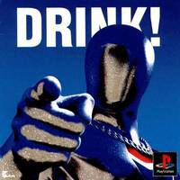

Pepsiman

Pepsiman é um jogo eletrônico de ação desenvolvido e publicado pela KID. Foi lançado no Japão no dia 4 de março de 1999 exclusivamente para PlayStation. É baseado no mascote Pepsiman da versão japonesa da marca de refrigerantes norte-americana Pepsi. No jogo, o jogador precisa desviar de obstáculos correndo, deslizando e pulando, ao mesmo tempo que o personagem principal corre automaticamente em cada uma de suas fases.